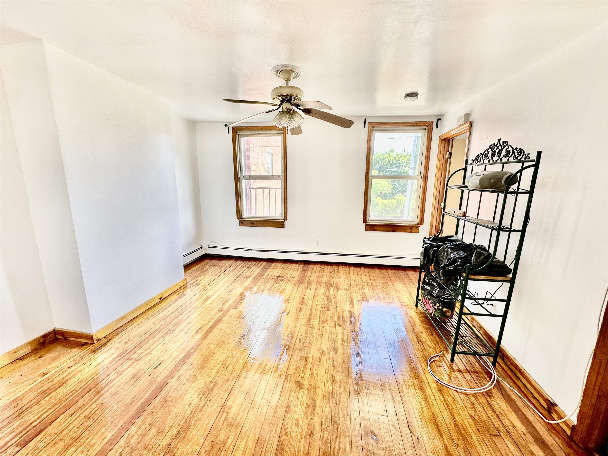
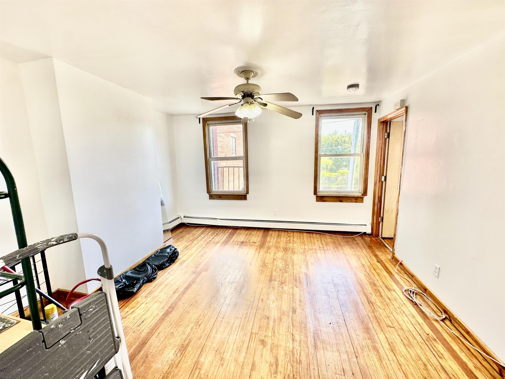
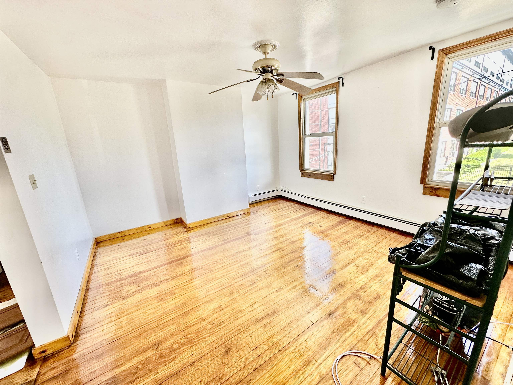
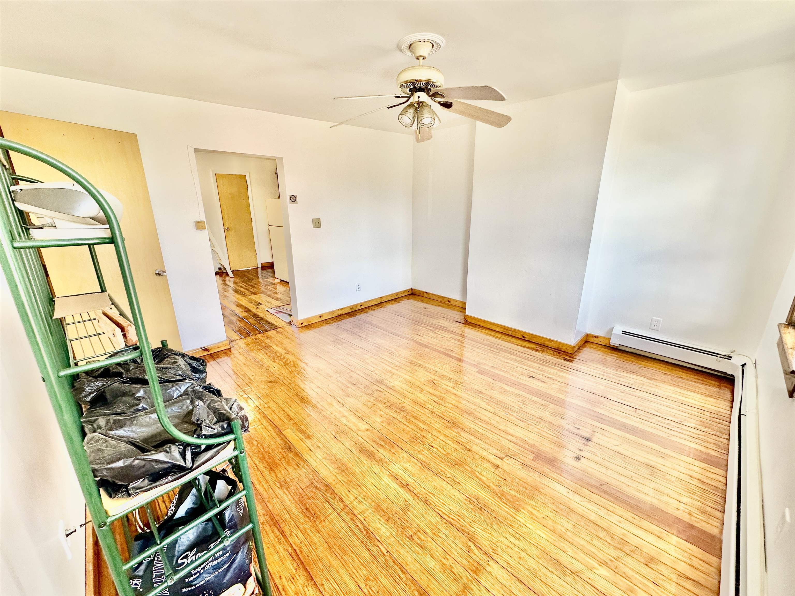
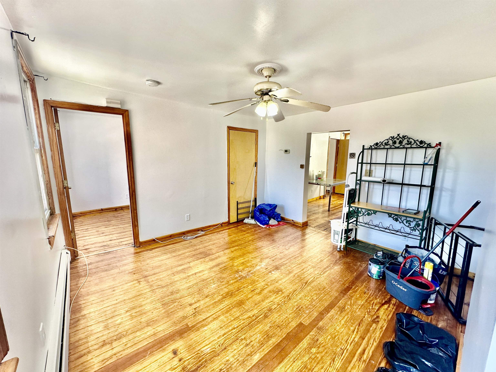
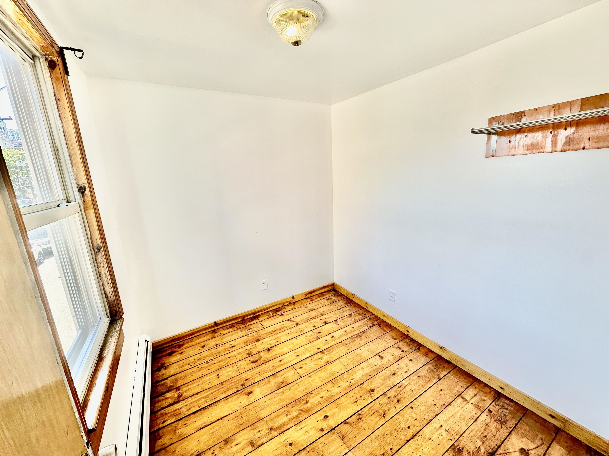

Welcome to 171 Van Winkle Ave #1F -- a charming 2-bedroom, 1-bath apartment in the heart of Journal Square, available 6/1 for $2,300/month! Enjoy an unbeatable combination of location, value, and convenience in one of Jersey City's most commuter-friendly neighborhoods. This apartment offers a practical layout with comfortable living space, while the bedrooms are more compact in size -- ideal for those seeking an affordable 2-bedroom option in a prime location. Located just minutes from the Journal Square PATH station, commuting to NYC is fast and easy with direct Manhattan access. Surrounded by local restaurants, cafés, bakeries, grocery stores, and beloved mom-and-pop shops, you'll love the neighborhood's vibrant energy and community feel. Close to parks, shopping, schools, laundromats, and major transportation options. Great opportunity to enjoy city living at an attractive price point. Available 6/1 -- schedule your showing today! -Close to Journal Square PATH station -Available ASAP